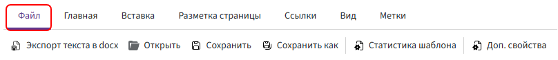
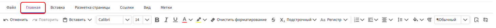
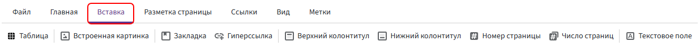
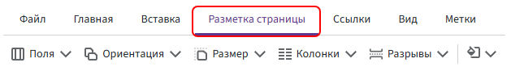
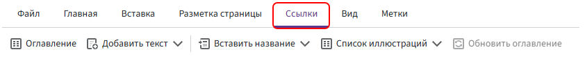
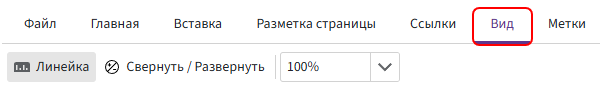
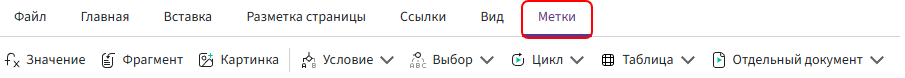
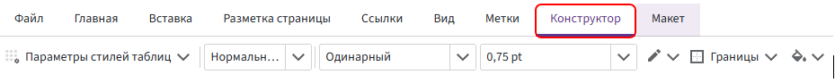
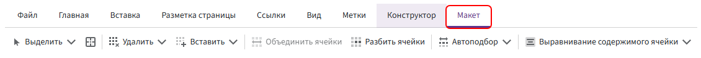

Панель инструментов
Панель инструментов содержит команды для редактирования и оформления шаблона. С её помощью можно форматировать текст, добавлять таблицы, изображения и метки Комбинатора, а также настраивать параметры страниц.
Некоторые вкладки появляются только при работе с определёнными элементами. Например, вкладки «Конструктор» и «Макет» доступны, когда курсор установлен внутри таблицы.
Вкладка «Файл»

На вкладке доступны следующие команды:
-
Экспорт текста в docx — экспортирует текстовое содержимое шаблона вместе с метками, условиями, циклами и функциями в файл формата
.DOCX.Полученный документ можно открыть в другом шаблоне через «Файл» → «Открыть». Все конструкции Комбинатора сохранятся.
Поля анкеты не переносятся. Если метки связаны с полями анкеты, добавьте такие же поля в новый шаблон.
-
Открыть — загружает документ формата
.DOCXв редактор.Содержимое файла используется как текстовая основа шаблона. После загрузки в него можно добавлять метки, функции и другие элементы автоматизации.
-
Сохранить — сохраняет изменения, внесённые в шаблон.
-
Сохранить как — сохраняет копию шаблона под новым именем.
-
Статистика шаблона — показывает количество используемых полей, меток и функций.
-
Доп. свойства — открывает дополнительные свойства шаблона, в которых можно настроить маску имени файла.
Подробнее см. в статье «Маска имени файла».
Вкладка «Главная»

Основная вкладка для редактирования и форматирования текста.
-
Отменить — отменяет последнее действие.
-
Повторить — повторяет последнее действие
-
Вставить — открывает стандартное меню работы с буфером обмена:
Вставить— вставляет в шаблон текст или объект из буфера обмена, например скопированный фрагмент текста или метку.Копировать— копирует выделенный фрагмент текста или метку в буфер обмена.Вырезать— удаляет выделенный фрагмент из шаблона и помещает его в буфер обмена.
Этим командам соответствуют привычные сочетания клавиш:
Ctrl + V— вставить;Ctrl + C— копировать;Ctrl + X— вырезать.
-
Шрифт — позволяет выбрать шрифт, например Calibri или Times New Roman.
-
Размер шрифта — задаёт размер шрифта, например 11, 12 или 14.
-
Полужирный — применяет к выделенному тексту полужирное начертание (
Ctrl + B). -
Курсив — применяет к выделенному тексту курсивное начертание (
Ctrl + I). -
Подчёркнутый — подчёркивает выделенный текст (
Ctrl + U). -
Цвет шрифта — изменяет цвет выделенного текста.
-
Цвет выделения текста — выделяет текст цветом, как маркером.
-
Очистить форматирование — сбрасывает применённое форматирование, включая шрифт, цвет и размер текста.
-
Зачёркнутый — зачёркивает выделенный текст.
-
Надстрочный и подстрочный текст — преобразует выделенный текст в надстрочные или подстрочные знаки.
-
Регистр — изменяет регистр выделенного текста:
-
Как в предложениях— первый символ каждого предложения становится прописным, остальные — строчными. -
ВСЕ ПРОПИСНЫЕ— весь выделенный текст переводится в верхний регистр. -
все строчные— весь выделенный текст переводится в нижний регистр. -
Начинать С Прописных— каждое слово начинается с прописной буквы. -
иЗМЕНИТЬ РЕГИСТР— строчные буквы становятся прописными, а прописные — строчными.
-
-
Нумерация — создаёт маркированные, нумерованные и многоуровневые списки.
-
Увеличить отступ — увеличивает или уменьшает абзацные отступы.
-
Выравнивание абзаца — изменяет выравнивание текста в абзаце.
-
Межстрочный интервал — задаёт межстрочный интервал, например 1,0; 1,5 или 2,0.
-
Заливка — изменяет цвет фона выделенного абзаца.
-
Непечатаемые символы — показывает или скрывает непечатаемые символы: пробелы, знаки абзаца, табуляцию и разрывы строк.
-
Стили текста — применяет к тексту выбранный стиль, например обычный текст или заголовок.
-
Найти — выполняет поиск текста в документе.
-
Заменить — находит и заменяет текст в документе.
Вкладка «Вставка»

Содержит команды для добавления в документ таблиц, изображений, ссылок и других объектов.
-
Таблица — вставляет таблицу в область редактирования. Перед вставкой можно указать количество строк и столбцов.
-
Встроенная картинка — добавляет изображение в документ.
-
Закладка — создаёт закладку внутри документа. Закладки можно использовать для быстрой навигации и перехода по внутренним ссылкам.
-
Гиперссылка — добавляет ссылку на сайт, адрес электронной почты или место внутри документа, отмеченное закладкой.
-
Верхний колонтитул — добавляет содержимое, которое будет повторяться в верхней части страниц документа.
-
Нижний колонтитул — добавляет содержимое, которое будет повторяться в нижней части страниц документа.
-
Номер страницы — добавляет автоматическую нумерацию страниц.
-
Число страниц — добавляет общее количество страниц в документе.
-
Текстовое поле — добавляет отдельный текстовый блок, который можно перемещать и размещать в нужной части страницы.
Вкладка «Разметка страницы»

Содержит команды для настройки параметров страниц документа.
-
Поля — настраивает отступы от краёв страницы: слева, справа, сверху и снизу.
Можно выбрать стандартный вариант или задать собственные значения.
-
Ориентация — изменяет ориентацию страницы:
Книжная— вертикальная;Альбомная— горизонтальная.
-
Размер — задаёт формат бумаги.
-
Колонки — разбивает текст на несколько колонок.
-
Разрывы — добавляет разрыв страницы, раздела или колонки.
-
Цвет страницы — изменяет цвет фона страниц документа.
Вкладка «Ссылки»

Содержит команды для создания оглавления, подписей и списков объектов.
-
Оглавление — добавляет автоматическое оглавление.
-
Добавить текст — позволяет включить выделенный фрагмент в структуру оглавления.
-
Вставить название — добавляет подпись к рисунку, таблице, диаграмме или другому объекту.
-
Список иллюстраций — создаёт список объектов, для которых были добавлены подписи, например список рисунков или таблиц.
-
Обновление оглавления — обновляет структуру и номера страниц в оглавлении.
Вкладка «Вид»

Содержит команды для настройки отображения области редактирования.
-
Линейка — включает или отключает горизонтальную и вертикальную линейки.
-
Свернуть / Развернуть — сворачивает или разворачивает метки. В свёрнутом виде метки занимают меньше места, поэтому проще оценить расположение и оформление текста.
-
Изменить масштаб — увеличивает или уменьшает масштаб отображения документа в области редактирования.
Вкладка «Метки»
Вкладка содержит метки и конструкции Комбинатора, которые используются для автоматического заполнения и формирования документов.

-
Значение — вставляет в документ значение выбранного поля. Подробнее
-
Фрагмент — вставляет содержимое другого шаблона, расположенного по указанному пути. Подробнее
-
Картинка — вставляет в документ изображение из файлового поля Битрикс24. Подробнее
-
Условие — добавляет конструкцию «если/иначе», которая позволяет выводить или скрывать часть документа в зависимости от заданного условия. Подробнее
-
Выбор — выводит один из вариантов текста в зависимости от значения выбранного поля. Подробнее
-
Цикл — повторяет фрагмент документа для каждого элемента списка. Подробнее
-
Таблица — повторяет строки таблицы в зависимости от количества элементов в списке. Подробнее
Вкладка «Конструктор»

Вкладка появляется, когда курсор установлен внутри таблицы. Она предназначена для оформления выбранной таблицы.
-
Параметры стилей таблиц — позволяет выбрать элементы таблицы, к которым будет применяться отдельное оформление.
-
Стиль таблицы — применяет к таблице готовый вариант оформления.
-
Стиль линии — задаёт вид линий границ, например одинарную линию.
-
Толщина линии — задаёт толщину границ таблицы.
-
Цвет линии — позволяет выбрать цвет границ таблицы.
-
Границы — добавляет или удаляет выбранные границы у таблицы или выделенных ячеек.
-
Заливка — изменяет цвет фона таблицы или выделенных ячеек.
Перед применением оформления выделите нужные ячейки или установите курсор внутри таблицы.
Вкладка «Макет»

Вкладка появляется, когда курсор установлен внутри таблицы. Содержит инструменты для изменения структуры таблицы и расположения содержимого в ячейках.
-
Выделить — позволяет выделить ячейку, строку, столбец или всю таблицу.
-
Линии сетки — показывает или скрывает границы ячеек, у которых не настроены видимые линии.
Линии сетки отображаются только в редакторе и не добавляются в готовый документ.
-
Удалить — удаляет выбранные ячейки, строки, столбцы или всю таблицу.
-
Вставить — добавляет новые строки или столбцы относительно выбранной ячейки.
-
Объединить ячейки — объединяет несколько выделенных ячеек в одну.
Команда становится доступна после выделения нескольких соседних ячеек.
-
Разбить ячейки — разделяет выбранную ячейку на несколько строк и столбцов.
-
Автоподбор — автоматически изменяет ширину столбцов в соответствии с содержимым таблицы или доступной шириной страницы.
-
Выравнивание содержимого ячейки — задаёт горизонтальное и вертикальное расположение текста внутри выбранных ячеек.